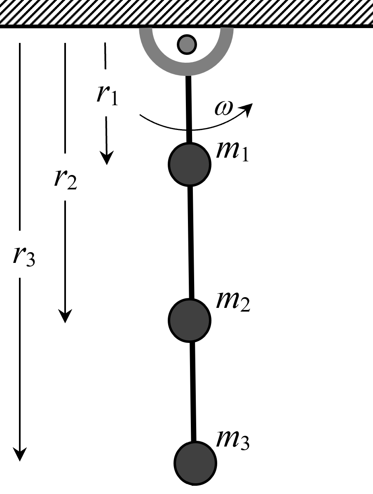
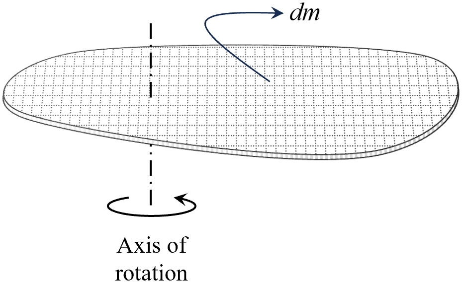
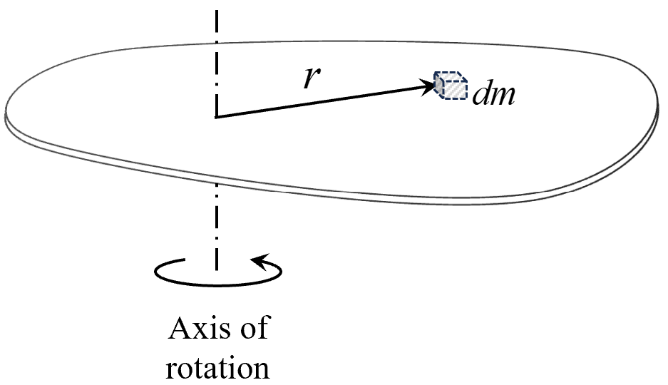
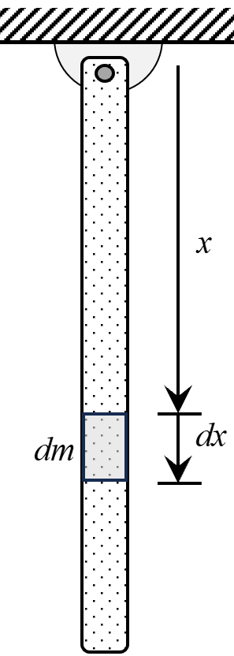
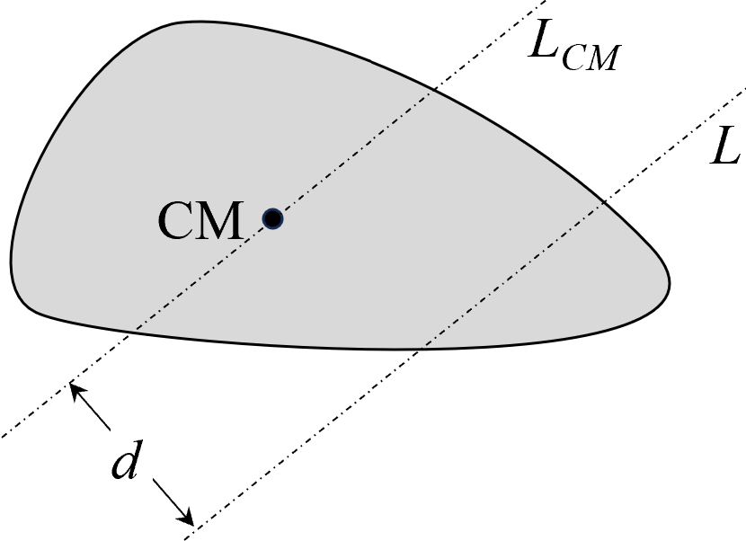
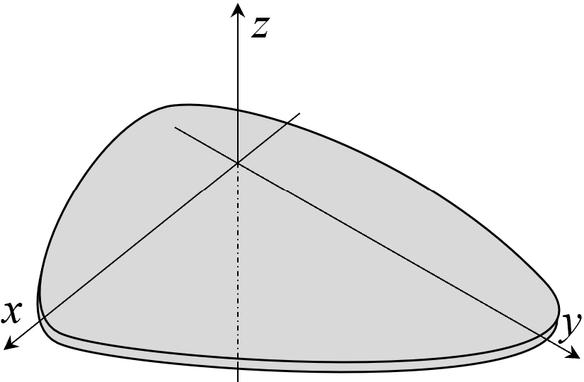

Rotational mechanics is an important part of physics that explains how objects turn
around a fixed point or axis. This chapter aims to give you a clear understanding of
key ideas like moment of inertia, torque, and angular momentum—concepts that are
widely used, from opening a door to running complex machines.
To better understand why rotational mechanics matters, let's look at some common
examples that use its principles:
Opening a Door
When you push or pull on a door handle, you create torque, causing the door
to swing on its hinges. This shows how applying force at a distance from the
pivot point generates torque and leads to rotational motion. The farther
from the hinge you apply the force, the less effort you need to turn the
door.
Pedaling a Bicycle
The circular movement of pedals and wheels is a clear example of rotational
mechanics. Pressing on the pedals creates torque that turns the wheels,
making the bicycle move forward. We will explore the details of these forces
and torques in this chapter.
Tightening a Screw
Using a screwdriver, you apply force in a circular path, causing the screw
to rotate. The screw's spiral shape changes this rotational motion into
straight-line motion, allowing it to go into a surface. This shows how
design works hand in hand with rotational mechanics.
Applications in Equipment Design
Rotational mechanics is vital in designing motors, gears, and turbines. Its
principles affect many industries, renewable energy devices like wind
turbines, and even medical equipment such as CT scanners.
Grasping rotational mechanics not only boosts our academic knowledge but also
enhances our understanding of how the physical world works.
A key term in this field is the "rigid body," an ideal object where the distance
between any two points stays the same, no matter what external forces act on it.
While it's a theoretical concept, it simplifies real-world calculations. For
example, rods, disks, and spheres are often considered rigid bodies to make
computations easier, unlike flexible objects like springs or pieces of cloth.
Understanding the concept of a rigid body and its types of motion—translation and
rotation—is fundamental in rotational mechanics.
Rigid Body: A rigid body is defined as an idealized solid object in
which the distance between any two given points remains constant, regardless of
external forces applied to it. This concept simplifies the analysis of
mechanical systems by neglecting deformations. Any type of motion of a rigid body
can be considered as either one of following motions or a combination of following
two types of motions:
Translation:
If the instantaneous velocities of all particles of
the
body are equal at a given instant, then the body is said to be undergoing
translation at that instant. In translation of a rigid body:
All points of
a rigid body move the same distance in the same direction during the same
time
interval.
All particles of the body follow paths that are
congruent to each other.
Each line in the body remains parallel to its original
orientation during the motion.
Following animation shows an example of translation of a rigid body:
Animation: Translating block.
Animation: Translating block.
Animation: Translating block.
In each of the above three animations, particles are shown to follow congruent
paths.
Rotation:
: A rigid body is said to perform
rotation if all particles of the body perform circular motion such that centers
of
all circles lie on a fixed line. This line is called axis of rotation.
Following are a few examples of rigid body performing rotation:
Animation: Rotating basketball.
Animation: Rotating rod.
In rotation of a rigid body:
Every particle in the rigid body moves along a circular path. The radius of
the
path depends on the distance of the particle from the axis of rotation.
All particles move in circular paths with common angular velocity around
their
respective centers at a given time. This means they all complete their
circular
paths in the same time.
If the rotation is not uniform, the entire rigid body experiences the same
angular acceleration. Hence, the rate of change of angular velocity
is the same for all particles at a given time.
The kinematics of rotation of rigid body can be analysed by knowledge of kinematics
of circular motion, which gets described by the angular variables along with
relation between them. These angular variables are:
Angular Displacement (\( \theta \)): Angular displacement is
defined as the angle through which a point or line has been rotated in a
specified sense about a specified axis. The direction of the angular
displacement vector is determined by the right-hand rule: if the fingers of
the
right hand curl in the direction of rotation, the thumb points along the
axis in
the positive direction.
Angular Velocity (\( \omega \)): Angular velocity is defined as
the rate of change of angular displacement with respect to time. It is given
by:
\( \qquad\omega = \frac{d\theta}{dt} \)
Angular velocity is the same for all points in a rigid body rotating about a
fixed axis, and its direction is given by the right-hand rule.
Angular Acceleration (\( \alpha \)): Angular acceleration is
the rate at which the angular velocity changes with time. It is expressed
as:
\( \qquad\alpha = \frac{d\omega}{dt} \)
Like angular velocity, angular acceleration is identical for all points in
the
rigid body and its direction depends on whether the angular velocity is
increasing or decreasing.
Equations of Rotational Motion: The equations governing rotational
motion are analogous to those for linear motion. With symbols having usual meaning,
the equations are as follows:
Equation
Rotational Form
Linear Analog
First Equation
\( \omega = \omega_0 + \alpha t \)
\( v = v_0 + a t \)
Second Equation
\( \theta = \omega_0 t + \frac{1}{2} \alpha t^2 \)
\( s = v_0 t + \frac{1}{2} a t^2 \)
Third Equation
\( \omega^2 = \omega_0^2 + 2 \alpha \theta \)
\( v^2 = v_0^2 + 2 a s \)
These equations illustrate the direct correspondence between linear and rotational
kinematics, facilitating the analysis of rotational motion using principles
analogous to those of linear motion.
Consider a massless rod with three particles of masses \( m_1 \), \( m_2 \), and \(
m_3 \) attached at distances \( r_1 \), \( r_2 \), and \( r_3 \) from the axis of
rotation, respectively. This is shown in diagram below:

Diagram: System under rotation.
The total kinetic energy of this rotating system is given by:
\(\qquad KE_{\text{total}} = \tfrac{1}{2} m_1 v_1^2 + \tfrac{1}{2} m_2 v_2^2 +
\tfrac{1}{2} m_3 v_3^2 \)
[where \( v_1 \), \( v_2 \), and \( v_3 \) are the linear velocities
of
the particles]
Since each particle moves in a circular path, their velocities relate to the angular
velocity \( \omega \) through \( v_i = r_i \omega \). Substituting this relation,
the kinetic energy becomes:
In linear motion, the kinetic energy is \( KE = \tfrac{1}{2} m v^2 \), where \( m \)
represents inertia—the resistance to changes in motion, and \( v \) is the linear
velocity, the rate of change of linear position. Similarly, in rotational motion, \(
\omega \) is the angular velocity, the rate of change of angular position. The term
within the brackets in the previous equation acts as the rotational inertia and is
defined as the moment of inertia \( I \):
\(\qquad I = m_1 r_1^2 + m_2 r_2^2 + m_3 r_3^2 \)
Thus, the kinetic energy of the rotating system simplifies to:
\(\qquad KE_{\text{total}} = \tfrac{1}{2} I \omega^2 \)
The moment of inertia, denoted by \( I \), quantifies the resistance of an object to
changes in its rotational motion. It serves as the rotational analogue to mass in
translational motion and is influenced by both the mass of the object and its
distribution relative to the axis of rotation.
Calculations of the moment of inertia for rigid bodies with discrete masses and
continuous mass distributions are described below:
For Discrete Bodies:
For a system of discrete particles, the moment of inertia about a given
axis
is calculated using:
\(\qquad I = \sum m_i r_i^2 \)
Here, \( m_i \) is the mass of the \( i \)-th particle, and \( r_i \) is
its
distance from the axis of rotation.
The moment of inertia depends on:
Mass (\( m_i \)): Greater
mass increases \( I \),
making rotational acceleration more difficult.
Distance from Axis (\( r_i
\)): \( I \) increases
with
the square of \( r_i \), emphasizing the impact of mass
distribution.
Example Problem:
Consider two particles of masses 1 kg placed at coordinates (1m, 2m, 0)
and a
mass of 2 kg placed at (3m, 4m, 0). We solve for the moment of inertia
of
this system about the z-axis in the following steps:
Distance Calculation:
For the first particle at (1m, 2m, 0), the distance from the
z-axis
is \( r_1 = \sqrt{1^2 + 2^2} = \sqrt{5} \, \text{m} \).
For the second particle at (3m, 4m, 0), the distance from the
z-axis
is \( r_2 = \sqrt{3^2 + 4^2} = 5 \, \text{m} \).
Moment of Inertia Calculation:
For the first particle: \( I_1 = m_1 r_1^2 = 1 \times 5 = 5 \,
\text{kg·m}^2 \).
For the second particle: \( I_2 = m_2 r_2^2 = 2 \times 25 = 50 \,
\text{kg·m}^2 \).
Total Moment of Inertia: \( I_z = I_1 + I_2 = 5
+ 50
= 55 \, \text{kg·m}^2 \).
Thus we observe that moment of inertia not only depends on masses, but also on their
distribution around the axis of rotation.
For Continuous Bodies:
Continuous mass distributions, such as solid rods, uniform discs, and
spherical shells, have their mass spread uniformly throughout their
volume.
Unlike discrete systems where mass is concentrated at distinct points,
continuous bodies possess a seamless and uninterrupted mass
distribution,
making their analysis more complex.
To determine the moment of inertia for such bodies, we conceptualize the
object as being composed of an infinite number of infinitesimally small
mass
elements. By dividing the entire body into these tiny pieces, we can
calculate the moment of inertia for each individual element and then sum
their contributions. This summation process is simmilar to that for
descrete
mass systems, but the number of masses become infinite. This is
described in
following diagram:

Diagram: Continuous body consisting of infinitesimal mass
elements \( dm \).

Diagram: Selecting a particular \( dm \) to calculate \( dI
\).
The first diagram illustrates how a continuous body is conceptually
divided
into numerous infinitesimal mass elements (\( dm \)). The second diagram
highlights the selection of a specific \( dm \) to calculate its
individual
moment of inertia (\( dI \)).
The moment of inertia \(dI\) of an individual particle of mass \(dm\)
located at a distance \(r\) from axis of rotation is given as:
\(\qquad dI = r^2 \, dm \)
So the total moment of inertia \(I\) of complete mass \(M\) is written
as:
\(\qquad I = \int_{M} r^2 \, dm \)
By integrating over the entire mass of
the object, we effectively sum the contributions of all infinitesimal
mass
elements, yielding the total moment of inertia.
In summary, calculating the moment of inertia for continuous bodies
involves
breaking down the mass distribution into infinitesimal elements,
determining
the moment of inertia for each element, and integrating these
contributions
across the entire volume of the object. This process is shown in
following
example:
Example Problem:
Consider a uniform rod of mass \( M = 3\,\text{kg} \) and length \( L =
2\,\text{m} \) rotating about one of its ends. The axis of rotation is
perpendicular to the rod and passing through its end as shown in following
animation:
Animation: Rotating rod.
We aim to
determine the moment of inertia of this rod about the rotation axis through
the following steps:
Step 1: Divide the Rod into Infinitesimal Mass
Elements
Let \( x \) be the distance from the axis of rotation (one end of
the rod). Consider an infinitesimal segment of the rod at position
\( x \) with length \( dx \) and mass \( dm \).

Diagram: Rod rotating about its end, divided into
infinitesimal
mass elements \( dm \).
Step 2: Express \( dm \) in Terms of \( dx \)
Since the rod is uniform, the linear mass density \( \lambda \) is
constant and given by:
Thus, the moment of inertia of the rod about its end is:
\(\qquad I = 4\,\text{kg·m}^2 \)
This example demonstrates the application of integration to calculate
the
moment of inertia for a continuous mass distribution, highlighting the
transition from discrete summation to continuous integration.
Radius of gyration
The radius of gyration is the distance from the axis of rotation at which the entire
mass of a rigid body can be concentrated to yield the same moment of inertia.
Consider a
body of mass \( M \) having a moment of inertia \( I \) about a particular axis. If
the radius of gyration is \(k\) then the body can be assumed concentrated at a
distance \(k\) from given axis of rotation to give the same moment of inertia. Thus,
\(\qquad I=Mk^2\)
\(\Rightarrow
k = \sqrt{\frac{I}{M}}\)
Example below describes this in detail:
Example Problem:
Consider a uniform rod of mass \( M = 3\,\text{kg} \) and length \( L =
2\,\text{m} \) rotating about one of its ends.
We aim to find radius of gyration about its axis of rotation through
the following steps:
Solution:
Step 1: Finding moment of inertia
As described in previous example, the moment of inertia of such a rod is
\(4\text{kgm}^2\)
Step 2: Finding \(k\)
Assuming entire mass at distance \(k\), to give the same moment of
inertia:
The relation between moments of inertia of a rigid body about different axes is
established by two theorems: parallel axis theorem and perpendicular axis theorem.
Both of these are described below:
Parallel Axis Theorem:
Consider a rigid body rotating about an axis \( L \) which does not pass
through the center of mass of the body. We can always find another axis \(
L_{\text{CM}} \) which is parallel to \( L \) but passes through the center
of mass of the body. This is shown in the diagram below:

Diagram: Parallel axes for body.
If the moment of inertia of the rigid body about axes \( L \) and \(
L_{\text{CM}} \) are \( I \) and \( I_{\text{CM}} \) respectively, then
according to the parallel axis theorem:
\(\qquad I = I_{\text{CM}} + M d^2 \)
Here \( M \) is the mass of the rigid body, while \( d \) represents the
separation between the two axes \( L \) and \( L_{\text{CM}} \).
Perpendicular Axis Theorem:
The perpendicular axis theorem is applicable to planar rigid bodies
(laminas) that lie entirely in a plane, such as thin sheets or discs. It
relates the moment of inertia of the body about an axis perpendicular to the
plane (\( I_z \)) to its moments of inertia about two mutually perpendicular
axes (\( I_x \) and \( I_y \)) that lie in the plane and intersect at a
point. This is illustrated in the diagram below:

Diagram: Planar object with axes \( x \), \( y \), and \( z \).
According to the perpendicular axis theorem:
\(\qquad I_z = I_x + I_y \)
Where:
\( I_z \): Moment of inertia about the axis
perpendicular to the plane
(the \( z \)-axis).
\( I_x \): Moment of inertia about the \( x
\)-axis in the plane.
\( I_y \): Moment of inertia about the \( y
\)-axis in the plane.
This theorem simplifies the calculation of \( I_z \) when \( I_x \) and \(
I_y \) are known or easier to compute. It is particularly useful for objects
with symmetrical shapes, such as circular discs or rectangular plates, where
calculating moments of inertia about in-plane axes is straightforward.